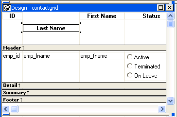
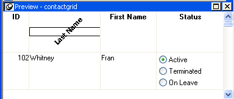

Controls that display text such as text controls, columns, and computed fields can be rotated from the original baseline of the text. The Escapement option on the Font property page for the control lets you specify the amount of rotation, also known as escapement.
Several other properties of a rotated control affect its final placement when the DataWindow object runs. The location of the control in Design view, the amount of rotation specified for it, and the location of the text within the control (for example, centered text as opposed to left-aligned text) all contribute to what you see in the DataWindow object Preview view.
The following procedure includes design practices that help ensure that you get the final results you want. As you become more experienced, you can drop or alter some of the steps. The procedure recommends setting a visible border on the control so that you can see where the control is located in the Preview view and making the control movable in the Preview view, which is often helpful.
 To rotate a control in a DataWindow object:
To rotate a control in a DataWindow object:
Select the control in the Design view.
Change its border to Box (General property page>Border>Box) and make it movable (Position property page>Moveable check box).
In Design view, enlarge the area in which the control is placed.
For example, in a grid DataWindow object, make the band deeper and move the control down into the center of the band.
Display the Modify expression dialog box for the Escapement property. (Click the button next to the Escapement property on the Font property page.)
Specify the amount of rotation you want as an integer in tenths of a degree. (For example, 450 means 45 degrees of rotation; 0 means horizontal or no rotation.)
The origin of rotation is the center of the top border of the box containing the text. It is often helpful to use left-aligned text (General property page>Alignment>Left) because it makes it easier to position the control correctly. This example shows text centered within the control.

If the box that contains the text overlaps the border of the page or the border of a label in a DataWindow object with the Label presentation style, the origin of rotation is the center of the portion of the top border that is within the page or label, and the portion that is outside the page or label is cut off. This can cause the text in the box to run to a second line when it is rotated. If you want the text to display close to the border, you can add one or more line breaks ("~r~n") before the text and adjust the size of the box.
To display the current rotation in Preview, close the Preview view and reopen it (View>Preview on the menu bar).

Drag and drop the control in the Preview view or Design view until it is where you want it.
In Design view, select the control that is being rotated, remove the temporary border, and deselect the Moveable check box.
 If you are using a conditional expression for rotation If you are specifying different rotations depending on particular
conditions, you might need to add conditions to the x and y properties
for the control to move the control conditionally to match the various
amounts of rotation. An alternative to moving the control around
is to have multiple controls positioned exactly as you want them,
taking into account the different amounts of rotation. Then you
can add a condition to the visible property of each control to ensure that
the correctly rotated control shows.
If you are using a conditional expression for rotation If you are specifying different rotations depending on particular
conditions, you might need to add conditions to the x and y properties
for the control to move the control conditionally to match the various
amounts of rotation. An alternative to moving the control around
is to have multiple controls positioned exactly as you want them,
taking into account the different amounts of rotation. Then you
can add a condition to the visible property of each control to ensure that
the correctly rotated control shows.